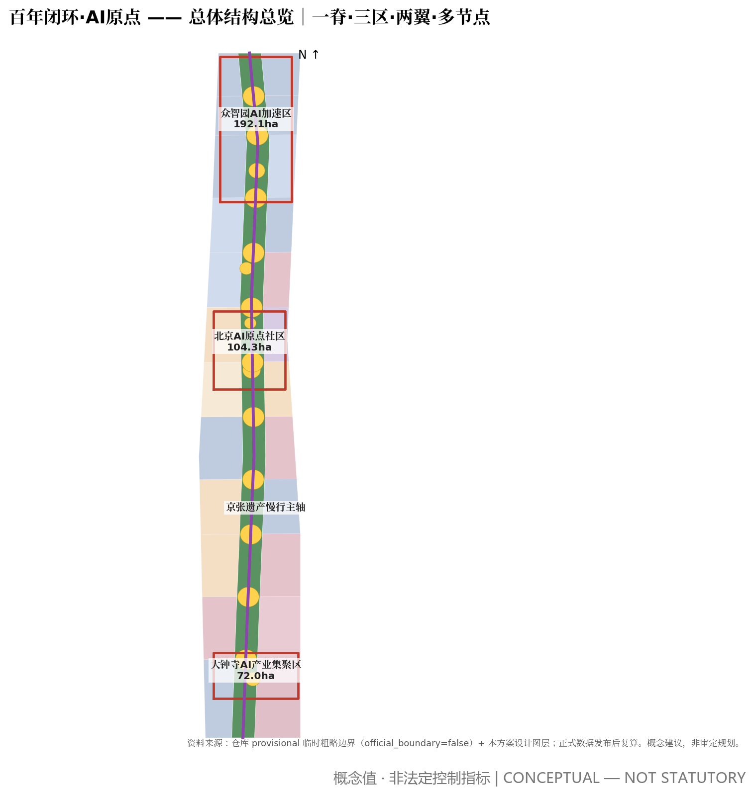

京张源点（Jing-Zhang Origin）—— 未来社会判断 × 营造法式 × 双情景纪律的概念性城市设计建议
自检状态：本地四门自检全部 PASS（见 self_check.json）｜包状态：ready_for_review｜迭代：v1.2
假设与临时边界声明：当前全部面积指标基于仓库 provisional 粗略边界（低置信度），官方边界发布后须复算；容积率、高度等法定控制待正式数据补齐（详见 assumptions.json）。
形态完全相同，命运完全不同——差别不在技术，在分配。每个空间动作必须在两个情景下同时成立（营造法式 P2 双情景保险）。

匿名聚合统计（流量计数、环境传感），默认公开，汇入开放数据年报。
个人相关或商业敏感：明示授权、最小采集、本地化处理、留存上限，数据信托托管。
人脸识别、生物特征、行为画像：不采集、不存储、不设技术入口。
场景不是"获批后永久存在"，而是"在持续辩护中临时存在"；任何自动化决策保留人工申诉与接管通道。
另有 3 个测试验证场景（T-01 低速无人系统 / T-02 端侧算力微网 / T-03 AI 治理沙盒）单独标注，均为测试概念。
分期复算：近期约 1.86 km²／中期约 5.80 km²／远期约 3.74 km²（临时边界口径）。城市即试验场：L1–L3 分级测试位收费，社区基金为主体，≥50% 收益反哺。
| 任务 | 响应位置 |
|---|---|
| agent.1 总体概念/命名/Logo | 提案统筹章：京张源点命名体系、人字轨 Logo 方向、三区两翼回路 |
| agent.2 创新生态（5–8 案例） | 统筹章：6 个全球案例+五环生态图谱 |
| agent.3 场景（≥10 卡/≥3 测试/≥5 画像） | 场景章：10 张场景卡+3 个测试验证场景+5 类画像 |
| agent.4 公共空间与朝圣地标（≥3） | 风貌章：原点碑/荣誉墙/展示廊/(备用)观景塔 |
| agent.5 文化叙事 | 统筹与风貌章：1909–2019–2026 百年闭环叙事+导览路线 |
| agent.6 长期运营 | 运营章：一赛一节一墙一廊年度体系+城市即试验场 |
来源：官方资格预审公告、场地包、智能体任务书、公开资料登记表、未来社会学公开文献与团队设计研究文档（详见 sources.json 与提案参考资料章）。假设与复算触发条件见 assumptions.json；全部指标可从提交几何重算（metrics.json）。
完整双语提案：中文报告 ｜ English report